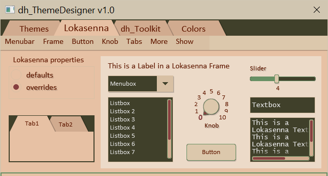

7.01 My Intro to Lokasenna_GUI v2:
I was in the midst of mixing one of my songs in the Reaper DAW when I decided to
get back to – after a long hiatus – doing some computer coding. There were some
things I could do with scripting that would really help me while mixing. Hmmm! Where to start?
So I took a headlong dive into Reascript, and also decided to learn a new scripting
language, Lua. It’s been a nice journey, although sometimes filled with angst. But the
learning process is rewarding. So. . .
I’m looking for a widget set to use in the graphical user interface that the script
users will interact with. I come across Lokasenna_GUI v2. I’m off to the races. Well,
more like an up and down roller-coaster ride. I’ll spare you the details and get to my
thoughts on it.
What I’m dealing with:
While the existing default palette may work well for a monochrome theme,
I found that it lacked the range needed when designing colored themes.
While many of the color properties of the classes can be overridden by assignment,
some are fixed in code. The class scripts would need to be modified
to expose those color properties to the developer.
Also, with a limited color palette and the way the colors are
applied to different areas of the elements, changing a color
to suit one purpose breaks it in another area.
For example: I would like brighter frames for Options (better contrast),
but it shares color internally with Textbox face.
If I increase the intensity of the frame color then the buttons
become like bright headlights in your eyes.
Default element color designations for Lokasenna GUI (showing “Desert” theme):

Some things became immediately apparent. I will need another color
for text when using a lighter theme, but retaining the
darker color for elements such as the Listbox.
The radio box frame color is hard-coded to "elm_frame"
so it is barely visible. The Menubox, when active, has the frame color
hard-coded to "elm-fill" (which I think looks terrible).
The scrollbar colors are also hard-coded. Overriding some of the
colors helps some, but doesn't solve all of the problems.
Overridden element color designations for Lokasenna GUI (showing “Desert” theme):

Wish list:
I would like to see better naming for element colors.
I would also like to add more colors to the palette
to be able to make more interesting GUIs. I agonized for some time over this.
Too many colors become cumbersome. What may look good for one
theme might not work for another. So I consider the addition
of the colors "elm_txt", "elm_face", "panel_border", and "panel_background"
the only essential extra colors necessary for good theming.
I provide others that I consider optional that may be used
to fine tune the GUI.
It is trivial to add additional color fields to elements, with only a few lines of code in each affected element class file. It would even be backward compatible. So I decided to modify some of Lokasennas GUI, and . . .
It is trivial to add additional color fields to elements, with only a few lines of code in each affected element class file. It would even be backward compatible. So I decided to modify some of Lokasennas GUI, and . . .
Voila! dh_Toolkit for Reaper:
GUI using dh_Toolkit classes (showing “Desert” theme):

Overall, I enjoyed working with the GUI. It is well-organized and fairly-well
documented. It wraps the gfx graphics engine nicely. It is also easy to modify if
should choose to undertake that task. Happy coding. happy mixing, singing,
dancing, whatever floats your boat.